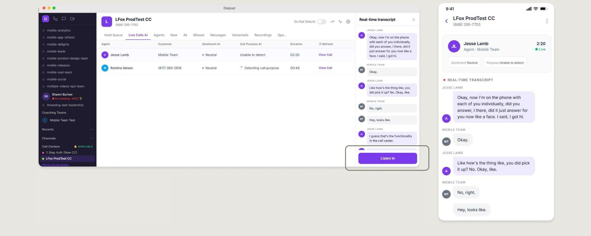

Design deep dive · 01
Real-time transcript.
- Goal
- Help users stay engaged by letting AI capture conversations in real time.
- Challenge
- Provide real-time information without distracting users from the live conversation.
- Design decision
- I organized the transcript around speaker hierarchy and progressive updates to reduce cognitive load.
Design principles applied
- Low cognitive load
- Speaker hierarchy
- Real-time feedback
- Design System consistency
